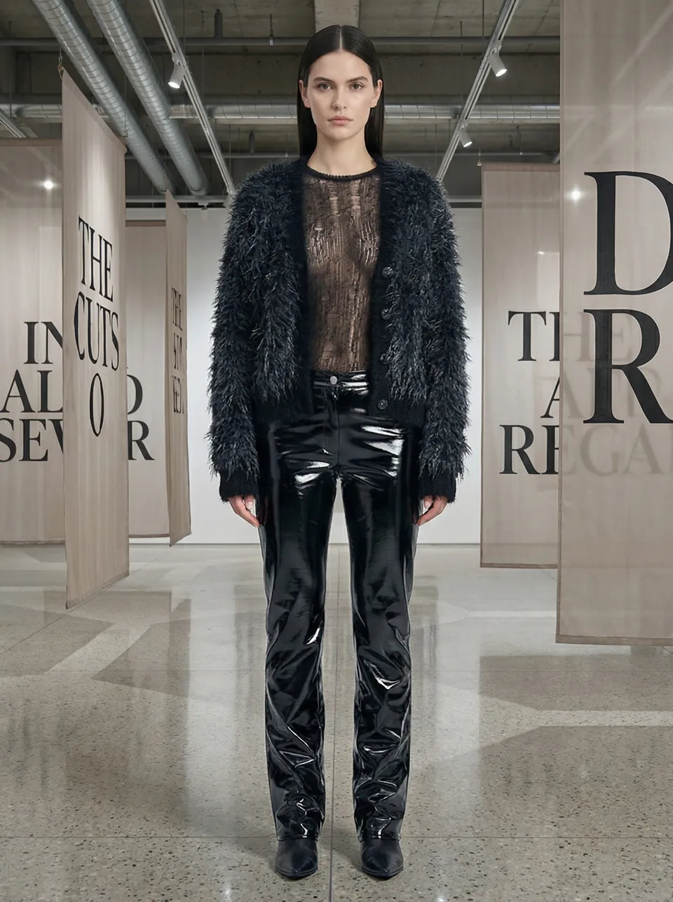

자체·가상 컬렉션 포트폴리오
컬렉션 룩북 · AI 모델 비주얼
가상 컬렉션의 착장과 모델 비주얼을 소개하는 룩북 영상입니다. 화보·룩북의 화면 구성과 브랜드 분위기를 검토할 수 있습니다.
담당 범위와 제작 내용 보기 ↗홈 / AI 패션 화보·룩북 제작
GRaY D. Lab · AI VIDEO PRODUCTION STUDIO
AI 패션 화보·룩북은 가상 모델과 착장, 배경을 기획해 브랜드의 룩을 이미지 또는 영상으로 소개하는 콘텐츠입니다. 그레이디랩은 의상 실루엣과 소재 표현, 스타일링과 시즌 분위기를 함께 검토합니다.
화보는 인상적인 장면과 브랜드 무드가 중요하고, 룩북은 여러 룩 사이의 표현 기준과 의상 정보 전달이 중요합니다. 상세 판매 이미지와 감성 화보가 같은 정확도 기준을 갖는다고 전제하지 않고, 활용 목적에 따라 검수할 디테일을 먼저 정합니다.

자체·가상 컬렉션 포트폴리오
가상 컬렉션의 착장과 모델 비주얼을 소개하는 룩북 영상입니다. 화보·룩북의 화면 구성과 브랜드 분위기를 검토할 수 있습니다.
담당 범위와 제작 내용 보기 ↗화보·룩북 이미지 또는 화보 영상 중 필요한 결과물을 정합니다. 원본 소스 제공 여부, 보정 범위와 화면 비율은 상담에서 확정합니다.
일정·가격·해상도·수정 횟수와 사용 범위는 프로젝트별 협의 사항입니다.
룩북 영상은 스타일링과 움직임, 브랜드 분위기를 전달합니다. 상품 상세용 이미지가 필요하면 제품 정보의 정확성과 검수 기준을 별도로 합의합니다.
동일한 기준 모델·배경을 목표로 제작할 수 있으나, 최종 일관성은 생성 결과와 검수 범위에 따라 확인해야 합니다. 룩 수와 필요한 통일 수준을 먼저 알려주세요.